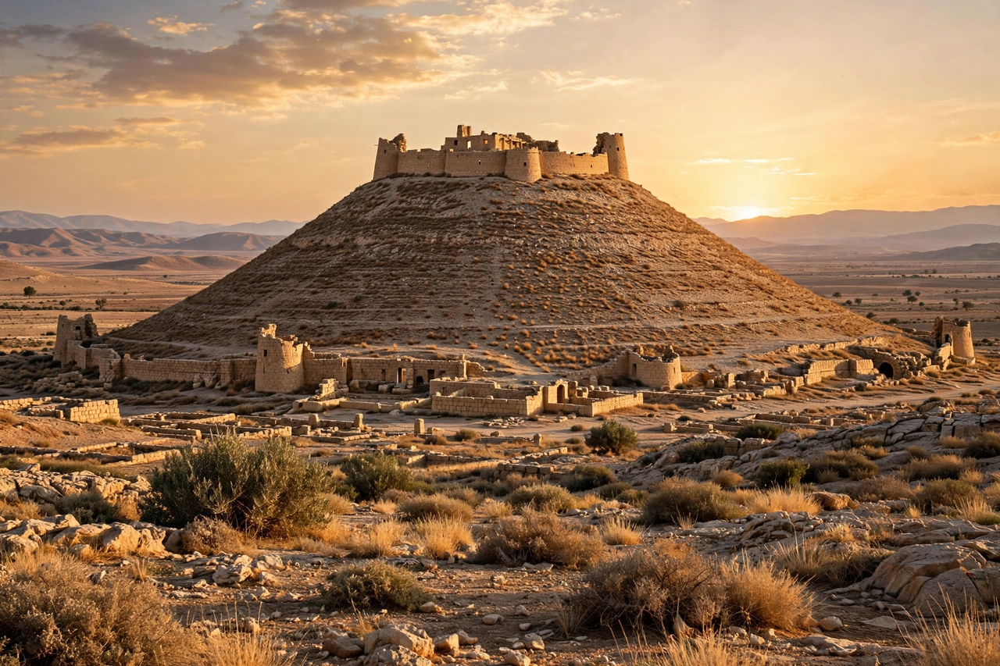

| Herod the Great | |
|---|---|
 | |
| King of Judaea | 37 – 4 BCE |
| Born | c. 72 BCE, Idumaea |
| Died | 4 BCE (or 1 BCE), Jericho |
| Dynasty | Herodian |
| Father | Antipater the Idumaean |
Herod I or Herod the Great (c. 72 – 4 or 1 BCE) was a Roman client king of Judaea — "the Great" for his extraordinary building programme and political longevity, but remembered in Jewish and Christian tradition as a ruthless tyrant. Of Idumaean (Edomite) descent, he rose through his father Antipater's alliance with Rome; appointed governor of Galilee at a young age, he fled the Parthian invasion of 40 BCE, was proclaimed King of the Jews by the Roman Senate, and conquered his kingdom by 37 BCE.
Herod rebuilt the Temple in Jerusalem on a colossal scale — the retaining walls of its platform, including the Western Wall, still stand — and founded the port city of Caesarea Maritima with an artificial harbour. His fortresses and palaces included Masada, the Herodium, Antonia Fortress, and winter palaces at Jericho; he also rebuilt Samaria as Sebaste and patronised cities across the eastern Mediterranean.
Paranoid about rivals, Herod executed his Hasmonean wife Mariamne I, her mother, and three of his own sons, including his heir Antipater days before his own death. In the Gospel of Matthew he orders the Massacre of the Innocents at Bethlehem — an episode unattested in other sources but consistent with his reputation; Augustus reportedly joked that it was safer to be Herod's pig (hus) than his son (huios).
Herod died at Jericho after an agonising illness and was buried at the Herodium, where his tomb was announced as discovered in 2007. His kingdom was divided among his sons Archelaus, Herod Antipas and Philip, under Roman oversight.